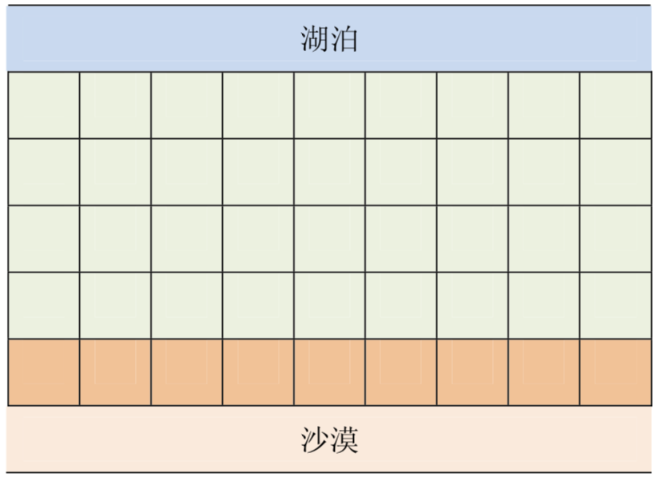
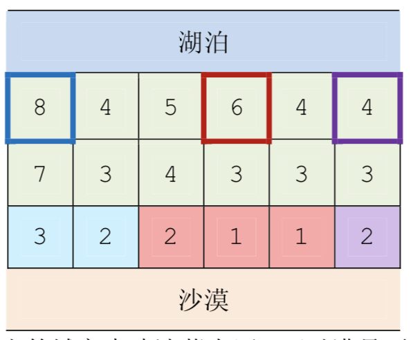
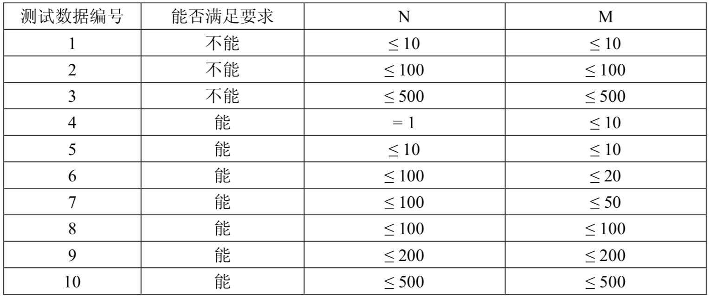

在一个遥远的国度，一侧是风景秀美的湖泊，另一侧则是漫无边际的沙漠。该国的行政区划十分特殊，刚好构成一个 $N$ 行 $M$ 列的矩形，如上图所示，其中每个格子都代表一座城市，每座城市都有一个海拔高度。
为了使居民们都尽可能饮用到清澈的湖水，现在要在某些城市建造水利设施。水利设施有两种，分别为蓄水厂和输水站。蓄水厂的功能是利用水泵将湖泊中的水抽取到所在城市的蓄水池中。因此，只有与湖泊毗邻的第 1 行的城市可以建造蓄水厂。而输水站的功能则是通过输水管线利用高度落差，将湖水从高处向低处输送。故一座城市能建造输水站的前提，是存在比它海拔更高且拥有公共边的相邻城市，已经建有水利设施。
由于第 $N$ 行的城市靠近沙漠，是该国的干旱区，所以要求其中的每座城市都建有水利设施。那么，这个要求能否满足呢？如果能，请计算最少建造几个蓄水厂；如果不能，求干旱区中不可能建有水利设施的城市数目。
输入的第一行是两个正整数 $N$ 和 $M$ ，表示矩形的规模。
接下来 $N$ 行，每行 $M$ 个正整数，依次代表每座城市的海拔高度。
输出有两行。如果能满足要求，输出的第一行是整数 1，第二行是一个整数，代表最少建造几个蓄水厂；如果不能满足要求，输出的第一行是整数 0，第二行是一个整数，代表有几座干旱区中的城市不可能建有水利设施。
2 5 9 1 5 4 3 8 7 6 1 2
1 1
3 6 8 4 5 6 4 4 7 3 4 3 3 3 3 2 2 1 1 2
1 3
【样例 1 说明】
只需要在海拔为9的那座城市中建造蓄水厂，即可满足要求。
【样例 2 说明】

上图中，在 3 个粗线框出的城市中建造蓄水厂，可以满足要求。以这 3 个蓄水厂为源头在干旱区中建造的输水站分别用 3 种颜色标出。当然，建造方法可能不唯一。
【数据范围】
本题共有 10 个测试数据，每个数据的范围如下表所示：

对于所有的 10 个数据，每座城市的海拔高度都不超过 $10^6$。
 Comet OJ
Comet OJ